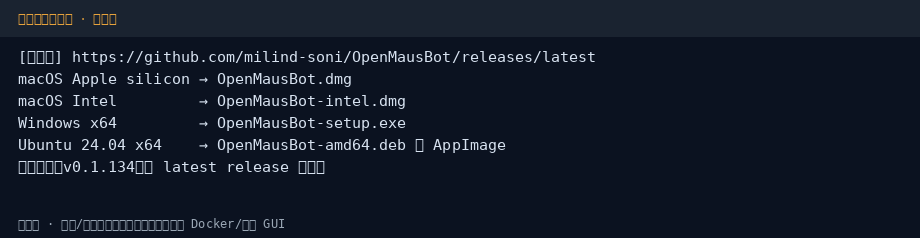
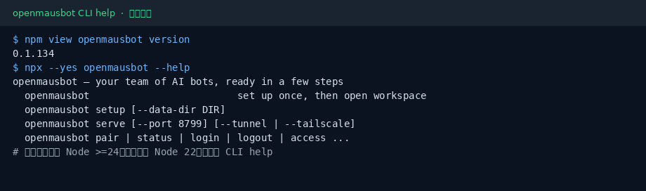
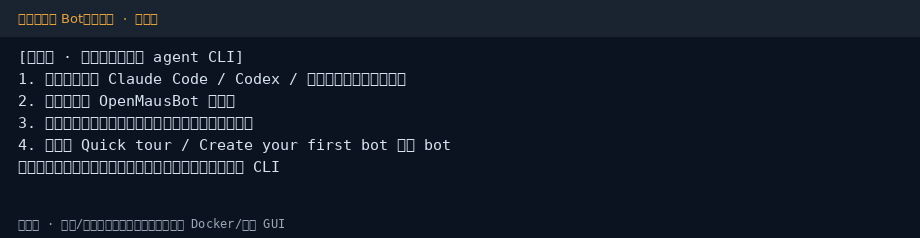

OpenMausBot 小白中文教程
社区非官方导读 · 上游 milind-soni/OpenMausBot · 文档
完整图文教程在 GitHub README：
30 秒对照
# 桌面：Releases 下对应系统的 dmg / exe / deb # CLI：Node >= 24 npx openmausbot --help
截图



社区非官方导读 · 上游 milind-soni/OpenMausBot · 文档
完整图文教程在 GitHub README：
# 桌面：Releases 下对应系统的 dmg / exe / deb # CLI：Node >= 24 npx openmausbot --help


